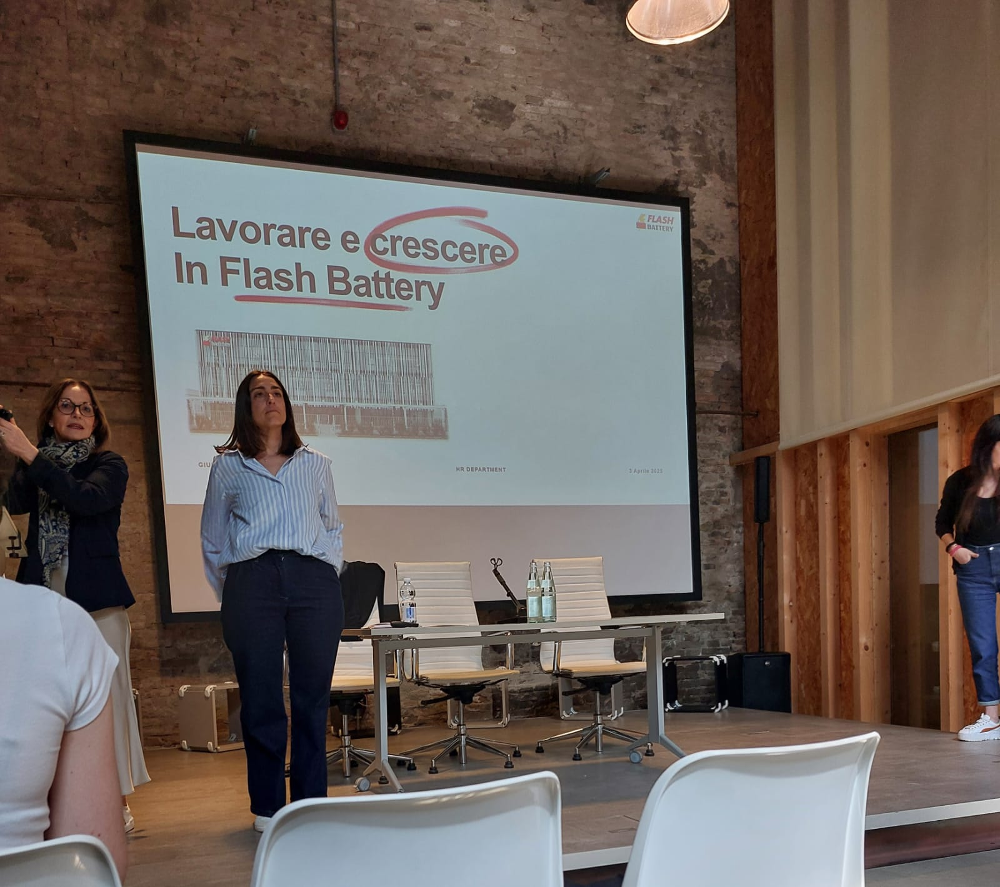

Cos'è
Unindustria Reggio Emilia è l'associazione territoriale di Confindustria che rappresenta circa 1.000 imprese manifatturiere e di servizi della provincia di Reggio Emilia. Supporta le aziende associate attraverso consulenza, progetti di innovazione, attività di rappresentanza istituzionale e iniziative formative su credito, finanza, internazionalizzazione, sostenibilità e trasformazione digitale.
L'incontro

L'incontro è stato condotto da due impiegate delle risorse umane dell'azienda Flash Battery. Ci hanno spiegato che cos'è un curriculum vitae e come impostarlo correttamente per valorizzare esperienze e competenze.
A ciascun partecipante è stato consegnato un foglio suddiviso nelle sezioni tipiche di un CV, con suggerimenti su cosa scrivere. Sul retro le stesse sezioni erano vuote da compilare in autonomia, con la possibilità di ricevere consigli personalizzati.
Dopo il curriculum, mi hanno illustrato come funziona un colloquio di lavoro: cosa aspettarsi, come gestire le emozioni, quali comportamenti evitare e quali domande rivolgere al recruiter per lasciare una buona impressione.
Commento
Competenze attivate
Trasversali
- Competenza in materia di consapevolezza ed espressione culturali
- Competenza in materia di cittadinanza
Specifiche
- Acquisizione di competenze pratiche per la ricerca di lavoro
- Comprensione delle dinamiche del mercato del lavoro
Ho trovato questa attività nel complesso abbastanza utile, soprattutto per quanto riguarda i consigli su come affrontare un colloquio di lavoro. La parte dedicata alla stesura del curriculum è stata interessante, ma non mi ha apportato particolari novità, avendo già realizzato un mio CV in passato.